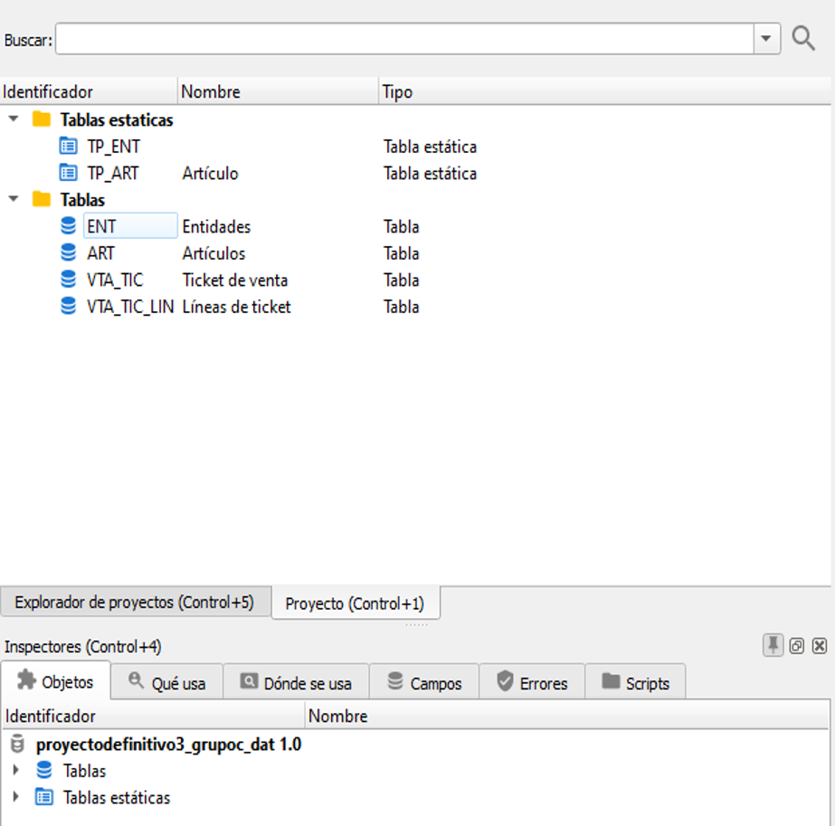
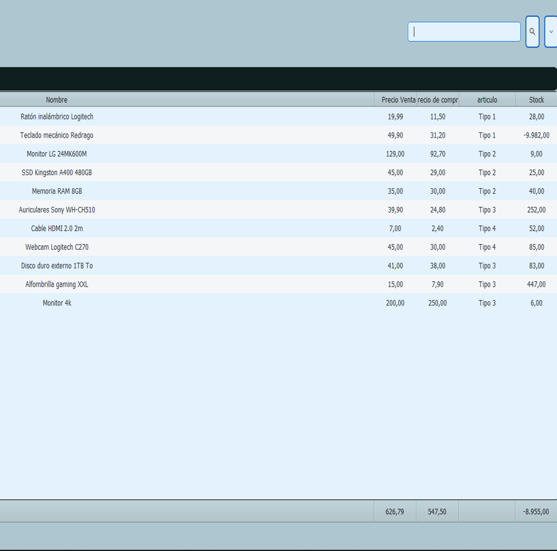
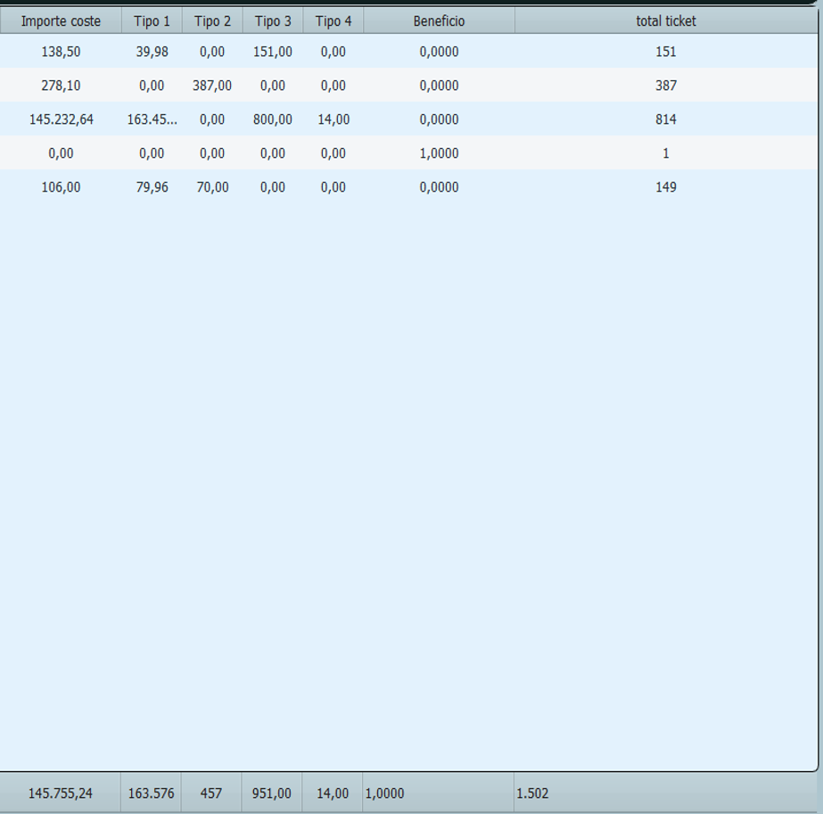
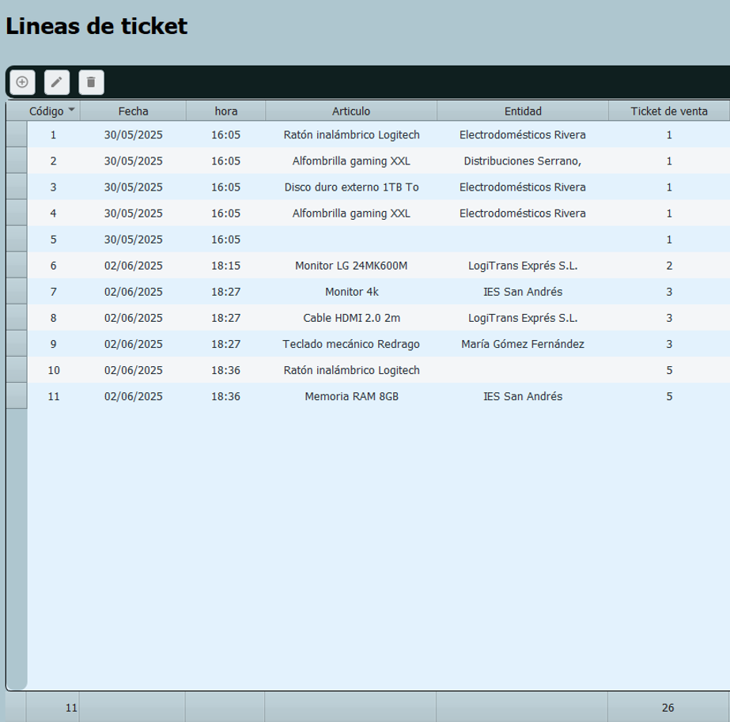

Velneo Project (Velneo vDevelop and Velneo vClient)
Project developed in Velneo with the main goal of implementing a system that allows control and analysis of the economic benefit obtained by each entity through generated tickets. The system provides detailed tracking of the total amounts and profits for each recorded transaction, allowing more precise and results-oriented financial management.
Key Features:
- Operation registration per entity.
- Automatic calculation of the profit associated with each ticket.
- Viewing of economic history by client, group, or category.
- Use of static and dynamic tables to organize information.
- Possibility to update data automatically through integrated processes.
This is how Velneo looks




Velneo vDevelop and Velneo vClient
This development takes advantage of Velneo's capabilities to provide a fast, structured, and easily scalable solution for business or administrative environments.